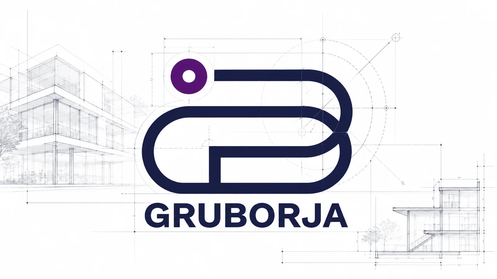
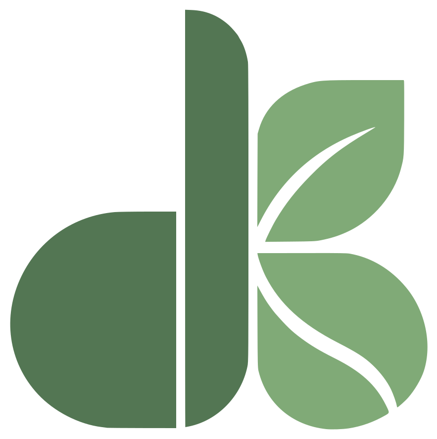
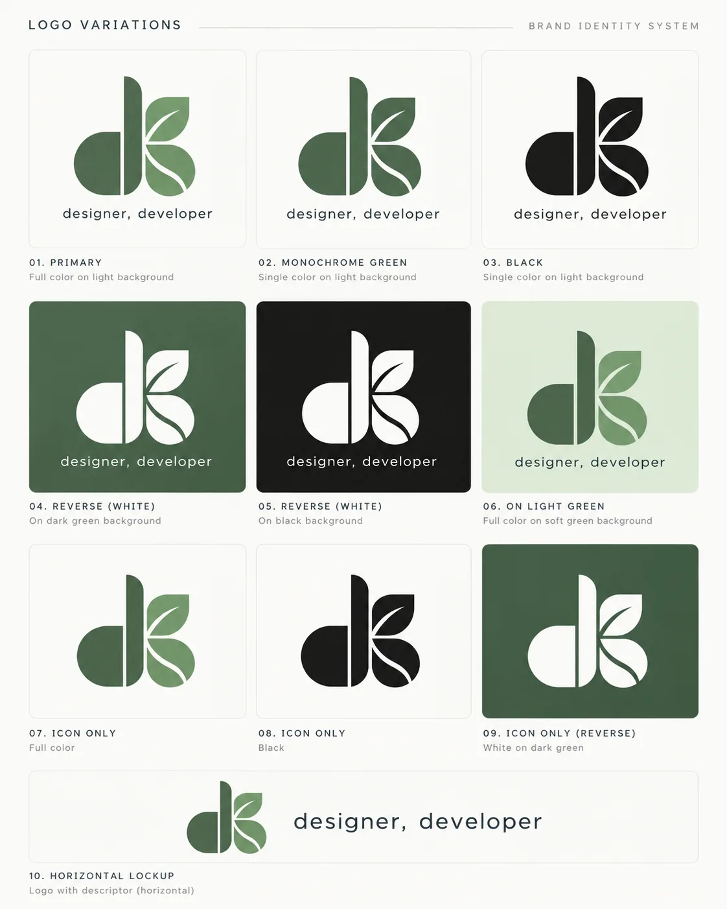

Developer · UX/UI
Hi, I'm Daniel Borja
Industrial designer and software development technician. I turn ideas into digital solutions, from design to implementation.
Developer · UX/UI
Industrial designer and software development technician. I turn ideas into digital solutions, from design to implementation.
di.jdbo@gmail.com
HTML5CSS3JavaScript Node.jsExpressMongoDB MySQLGit

Digital identity built from scratch, website and content strategy for an architecture and engineering firm.
I apply Design Thinking to every product, from research to prototype delivery.
Commercial module for Bi Banking: 15+ workshops, client and back-office flows, validated with users before handoff.

A monogram that joins the d and the B of Daniel Borja in a single stroke. The curves of the B are leaves, because the green of plants is something that represents me.

A platform connecting URL-INDIS Industrial Design with CATI-RPI to register, manage and share student projects.
Full stack
Restaurant rating platform with a REST API and authentication.
Frontend · SPA
Equipment management and lending, in vanilla JavaScript.

Iconic design objects: Philippe Starck's Juicy Salif, the Panton chair and the OHM table.

CAD technical documentation: views, scaled details and dimensions ready for manufacturing.
From design to implementation.
AUSJAL academic exchanges
18gym days a month
10ksteps, every day
Gym Cardio or walking
It is here · GMT−6
About me
I'm an industrial designer and software development technician with experience in digital design and frontend development. I combine a strong sense for user experience with technical knowledge to build interfaces that are functional, accessible and visually consistent.
My design background helps me understand needs and solve problems; my development training lets me take those solutions all the way to a real implementation. I'm currently strengthening my frontend skills and moving toward full stack development.
I'm looking to join a team where I can contribute through both technical execution and design, building digital products that are scalable, maintainable and user-centered.
LinkedIn Download CV (Spanish)
Personal identity
My logo is a monogram of my initials. The d and the B share the same vertical stroke, so they read as a single piece: design and development on one line, just like the descriptor "designer, developer".
The curves of the B are two leaves. Green and plants are something that represents me, and in this portfolio they become a garden: each module is a pot that grows when you open it.
Geometric shapes, bold strokes and rounded corners. Those same curves set the corner radius of the cards on this site.
#537653#80AA77#E3EDDC#F3F4EE#1C1E1BBricolage Grotesque for headings and Outfit for body text.

Case study · UX Design · Banco Industrial, 2024 – 2025
Design of the commercial letter of credit module for Bi Banking, Banco Industrial's online banking platform. The challenge: turning a complex foreign trade process into a clear, secure digital flow with electronic signature.
Design ThinkingWorkshopsFigmaInformation architectureUsability testing
Caso de estudio · Marca, web y contenido · 2022 – now
A Guatemalan architecture and engineering firm. As Social Media Manager and Content Strategist, I led the creation and launch of its digital identity from scratch, along with its website.
BrandingWeb developmentContent strategyMetrics
Case study · UX + Research
A virtual platform that brings together the Technology and Innovation Support Center (CATI-RPI) and Rafael Landívar University's Industrial Design program (URL-INDIS) to streamline project registration and management.


Industrial design
Part of my industrial design training: modeling and rendering iconic objects to understand their form, materials and how they are built. Tools: 3DS Max and Fusion 360.

Industrial design
CAD technical documentation to take a design to manufacturing: views of the object, enlarged details to scale and dimensions.
Open the image to see it at full size.
Project · Full stack
A web platform to rate restaurants and leave reviews.
JavaScriptNode.jsExpressMongoDBCSS3
Project · Frontend · SPA
A system to manage, lend and track technology equipment.
JavaScript ES6+HTML5CSS3LocalStorage
Career
GRUBORJA · Social Media Manager & Content Strategist 2022 – present
Led the creation and launch of the digital identity from scratch. I oversee the content plan and analyze metrics to make data-driven decisions.
Banco Industrial · UX Designer 2024 – 2025
Coordinated co-creation workshops and designed complex flows for financial products. Validated technical feasibility and information architecture with engineering, and built prototypes and ran usability tests.
UNO Digital · Copywriter 2023 – 2024
Strategic copywriting and concept development for digital campaigns in international markets, including clients in Asia.
Estudio 7 · Project Manager (internship) 2020
Operations management and coordination of deliverables for corporate design projects.
BetterWare México · Project Manager (internship) 2019
Oversight of commercial projects and collaboration across departments.
Technical skills
HTML5CSS3JavaScriptC#
Node.jsExpressREST APIsMongoDBMySQL
GitGitHubGitFlowVS CodeJetBrains Rider
Prompt engineeringAI-assisted prototypingGitHub Copilot
Product design & UX · Design Thinking
I use Design Thinking as the framework for the whole process: understand people, define the right problem, and reach a validated prototype that engineering is ready to build.
Empathize Research
Interviews and co-creation workshops with clients, business teams and users to understand their real needs.
Define Diagnosis
Mapping current and future operational flows (As-Is / To-Be) to find where the problem really is.
Ideate Information architecture
Structuring flows and content, reviewing technical feasibility with engineering from the start.
Prototype Low and high fidelity
Wireframes and prototypes in Figma, iterating quickly to reduce errors before building.
Test Validation and delivery
Usability testing with users and technical handoff to engineering.
Skills
Tools and methods I use to research, design and manage digital products.
UX/UI researchWireframingPrototyping in FigmaScrumKanban
PhotoshopIllustratorAdobe XDResponsive designDesign Systems3DS MaxFusion 360
Design ThinkingInformation architectureNotionTrelloJiraMicrosoft Office
Education
Campuslands GT · Software Development Technician 2025 – presente
Intensive in-person program: 1,600 hours of programming, 300 hours of technical English and 300 hours of soft skills.
Galileo University · Web Design and Development Technician 2025
Frontend and backend development, algorithms, programming logic and databases.
Rafael Landívar University · B.A. in Industrial Design, Cum Laude 2017 – 2021
Focus on product design methodologies, systems analysis and complex problem solving.
During my degree I completed two exchanges through AUSJAL, the network of Jesuit universities in Latin America that Rafael Landívar University belongs to.
2019
Universidad Iberoamericana
Mexico City, Mexico
2020
Universidad Pontificia Bolivariana
Medellín, Colombia